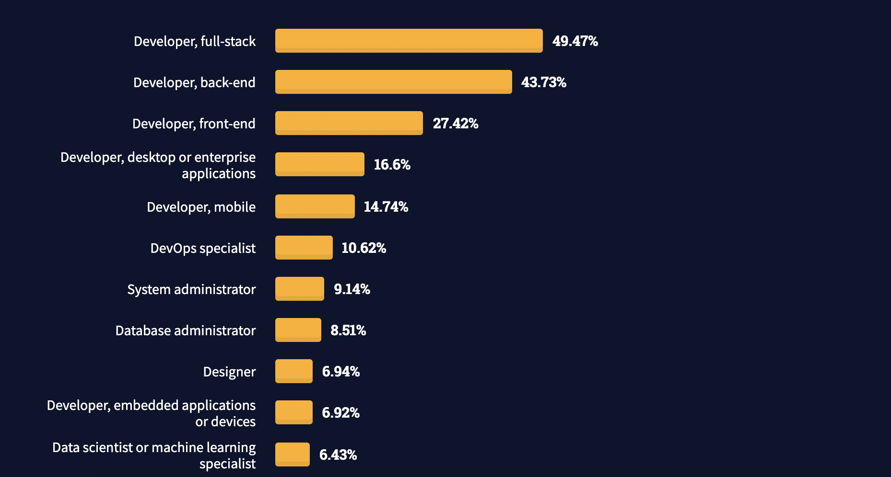
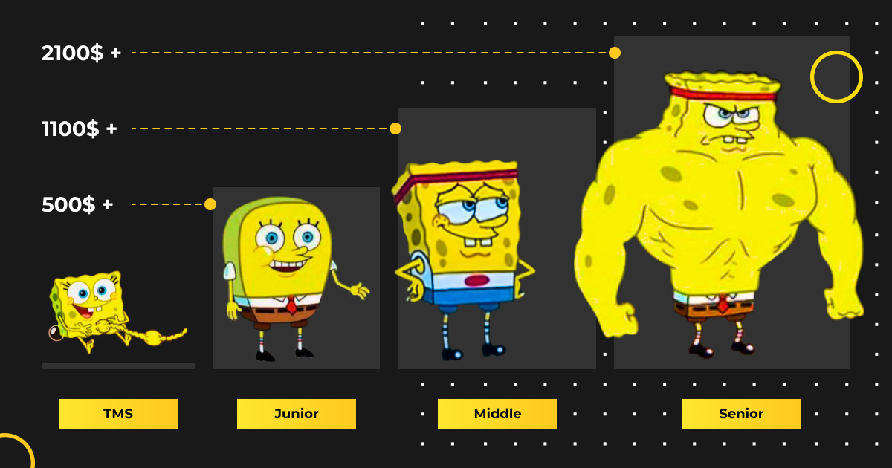

Что должен уметь фронтенд-разработчик?
Фронтенд-разработчик не просто верстает макеты.
Он хорошо знает JavaScript, разбирается во фреймворках и библиотеках, понимает, что находится «под капотом» на серверной стороне.
Его не пугают препроцессоры и сборщики LESS, SASS, GRUNT, GULP, он умеет работать с DOM, API, SVG-объектами, AJAX и CORS, может составлять SQL-запросы и работать с данными.
Итак, какие технологии должен освоить фронтенд-разработчик:
- HTML и CSS — в совершенстве
- препроцессоры CSS (Sass, Less, Stylus и так далее)
- JavaScript
- популярные фреймворки и библиотеки: jQuery, Angular.JS, React.JS, Backbone.js и други
- SVG
- DOM
- HTML5 API
- понимать принципы построения бэкенда и разбираться в серверных технологиях ― например, Node.js
- инструменты контроля версий (Git, GitHub, CVS и т. д.)
- базы данных и языки запросов (SQL, MySql, NoSQL, MongoDB и другие)
- графические редакторы (Photoshop, Illustrator и прочие).
Согласно ежегодному исследованию StackOverflow , одна из самых популярных профессий среди пользователей сервиса в 2023 году — фронтенд-разработчик.
Карьерный путь и зарплата фронтенд-разработчика
- Junior
«Расскажи, покажи, проверь, я переделаю, проверь снова»
Это первая ступенька на пути к развитию в профессии. Специалисты со званием джуна, как правило, приходят в компанию чистенькими (=без опыта работы), но «знающими». Поэтому, чтобы успешно пройти этап длиною в год-полтора, требуется помощь более опытных товарищей по цеху. Основная задача джуна на старте – связать необъятную теорию с реальной практикой коммерческогопрограммирования. Далее – оттачивание навыков и плавный переход на второй уровень. -
Middle
«Тебе нужен хороший код? Просто скажи, что я должен сделать»
Если джуны отважно утверждают, что стакан наполовину полон, то мидлы реально оценивают время и сложность поставленных перед ними задач. За расправленными плечами этих атлантов уже несколько успешно реализованных проектов, они могут работать в размеренном темпе и спокойно ходить на кофе-брейки. -
Senior
«Есть задача – есть решение»
Это максимально высокий уровень, на котором программисту требуется писать код. Помимо работы руками сеньор немало времени проводит на митингах, принимая участие в обсуждении архитектурыпрограммного продукта. На данной позиции можно оставаться сколько душе угодно. Но следует понимать, что и сеньор может быть не последним причалом в карьере.
